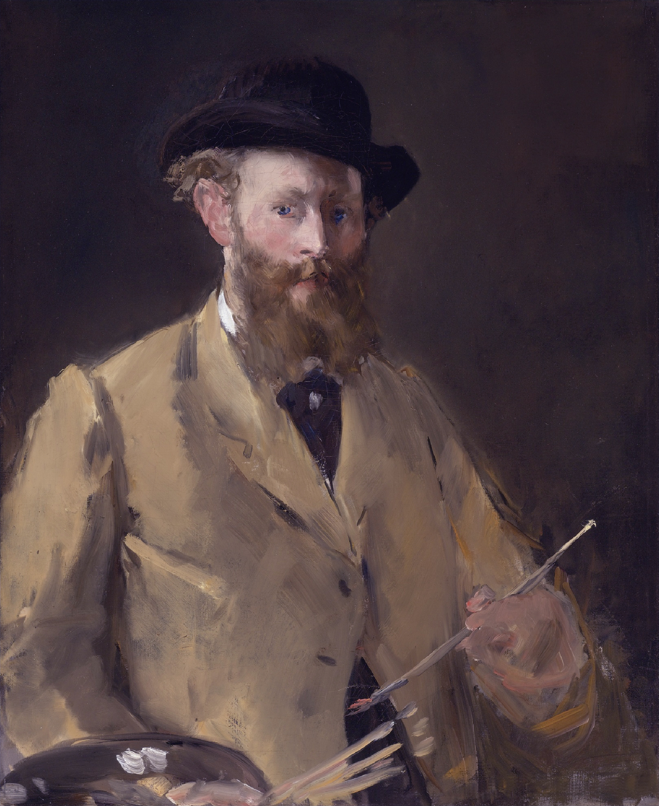

Édouard Manet (Parigi, 23 gennaio 1832 – Parigi, 30 aprile 1883) è stato un pittore francese, considerato uno dei precursori dell'Impressionismo. Le sue opere sfidarono le convenzioni accademiche e aprirono la strada alla pittura moderna, grazie al suo stile innovativo e all'uso della luce e del colore.
Vita
Analisi delle Opere
Manet ha realizzato alcune delle opere più provocatorie e rivoluzionarie della sua epoca. Colazione sull'erba è uno dei suoi dipinti più noti, che suscitò scandalo per la sua audace rappresentazione della nudità in un contesto moderno.
Altre opere celebri includono Il bar delle Folies-Bergère e Musica alle Tuileries, in cui Manet esplora la vita moderna parigina con uno stile pittorico innovativo e un uso magistrale della luce e del colore.
Tecniche Pittoriche
Manet adottò un approccio pittorico innovativo, caratterizzato da pennellate rapide e dalla semplificazione delle forme. Evitava i chiaroscuri tradizionali, preferendo contrasti netti tra luce e ombra.
Il suo uso del nero, insolito per gli impressionisti, contribuì a creare composizioni audaci e d'impatto. Manet fu anche un maestro nella rappresentazione della vita urbana e della società parigina.
Galleria
Contesto Storico
Manet operò in un periodo di profondi cambiamenti culturali e artistici. Il suo stile innovativo e le sue scelte tematiche provocarono spesso reazioni controverse tra critici e pubblico.
Le sue opere rappresentano una transizione tra la pittura accademica e l'Impressionismo, influenzando profondamente generazioni di artisti successivi.